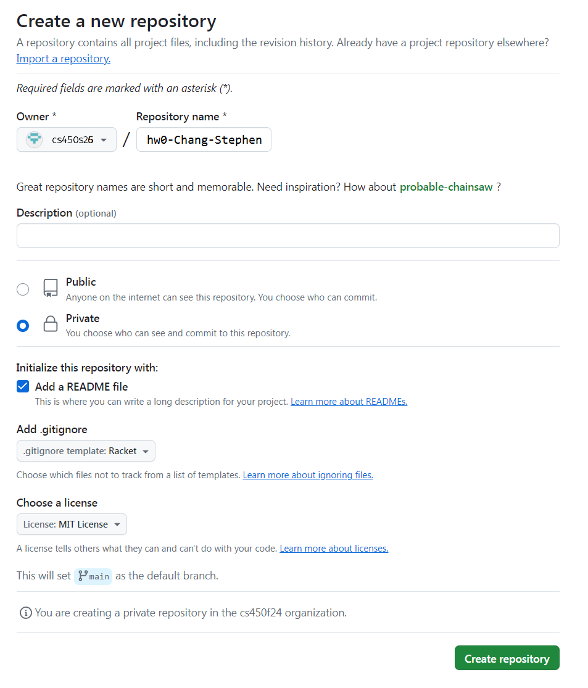
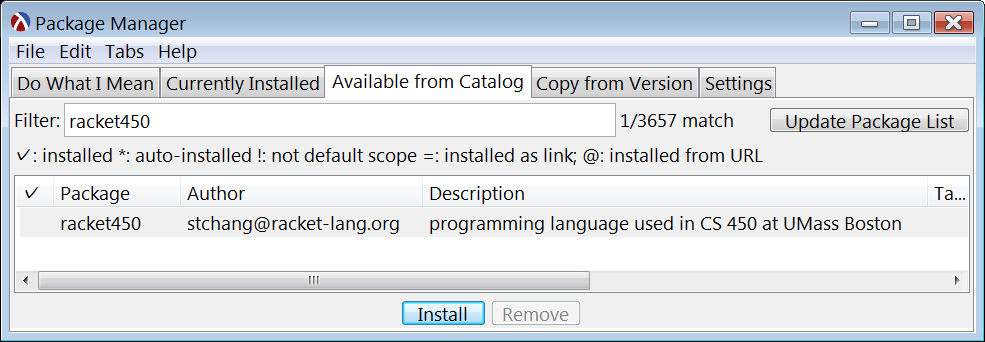

Homework 0
Last updated: Mon, 2 Feb 2026 19:51:19 -0500
Out: Thu Jan 29 2026, 11am EST
Due: Tue Feb 03 2025, 11am EST
Overview
This is a quick assignment to make sure that everyone is set up to complete and submit assignments in this course.
have a github.com account,
have told me your GitHub user name,
know how to execute basic git commands,
be a member of the CS450 Spring 2026 GitHub Organization,
have Racket and "racket450" installed,
know how to run basic Racket / racket450 programs,
begin to understand basic functional programming (using "racket450"),
know how to submit homework to Gradescope, using the GitHub Submission Method, for this class.
This assignment is worth 10 points.
Initial GitHub Tasks
Create a GitHub account (if you don’t already have one)
Tell me your GitHub account by completing the pre-class survey as soon as possible. (To access the survey, you need to use Google sign-in with your (full umb.edu) UMB email. This means you must sign out of other Google/Gmail accounts first, or open the link in an incognito window.) When I know your GitHub account, I will add you to the CS450 Spring 2026 GitHub Organization.
After you have been invited to the CS450 Spring 2026 GitHub Organization, go to your Github settings and accept the invitation.
Create a new repository for this assignment by going to the CS450 Spring 2026 GitHub Organization and clicking "New" (you can only do this after I have added you to the organization).

Note: The CS450 Spring 2026 GitHub Organization must be the owner of the repository. Do not create the repository in your own account.
- On the "Create a new repository" screen:
Name the repository hw<X>-<LASTNAME>-<FIRSTNAME> where <X> is the current homework number.
For example, I would name my hw0 repository hw0-Chang-Stephen.
Mark the repository as Private.
Check "Add a README file".
Select the Racket template for the .gitignore.
Choose whatever you wish for the license.
Here is an example screenshot: 
When done click "Create repository".
Choose and install a GitHub client on your computer. You may choose either a GUI client, or a command line one.
With help from the Getting started with Git and Using Git documentation, figure out how to clone the newly created hw<X>-<LASTNAME>-<FIRSTNAME> repository to your computer.
Now you are almost ready to work!
Installing Racket
Download Racket (for your platform) and install it.
The DrRacket IDE is easiest to use (especially for viewing images), but several other editors have Racket support as well.
Installing Racket450
This course uses a version of Racket tailored for the course called "racket450".
To install it, from DrRacket, go to File -> Package Manager, and then install the racket450 package.

This will allow you to use the language by writing #lang racket450 at the top of a file.
Alternatively, if you prefer the command line, install racket450 with the command:
raco pkg install racket450
Reading
Read the Preface, Prologue, and Chapters 1.1-1.3 of How to Design Programs (2nd ed). Make sure to run the examples to get a feel for how to write and run programs in Racket.
NOTE: The textbook will refer to "Student Languages" (and a "Stepper" that only works with the Student Languages) which we will not use in this course . Instead, we will always use the "racket450" language, which is invoked by putting #lang racket450 at the top of a file (see below).
How to Write Code In This Class
Do the programming Tasks below. Before you do so, this section spells out some requirements and tips.
File Name and Contents
Put your code in a file named hw0.rkt, located in the repository root directory.
The first line of the file should be #lang racket450.
You can see an example of what an initial hw0.rkt file looks at in hw0 starter code.
Commiting Files to GitHub
As you do the assignment, when you’ve reached an appropriate milestone (e.g., finished one exercise), you should commit and push your work to GitHub.
(Review Getting started with Git and Using Git if you need to.)
This will not only save a backup of your work in case of computer malfunction, it will also create a nice log in case you or someone else (me) needs to review it later, or if you need to revert to a previous state.
Make sure every commit has an appropriate commit message. See How to Write a Git Commit Message if you are unsure how to write a commit message.
Having a proper commit history, with good messages, will be part of the grade of each assignment.
Tasks
Programming in a "functional" language like Racket is similar to writing mathematical functions, which compute via arithmetic.
For example, to implement the mathematical function f(x) = x + 1, you would write in Racket:
(define (f x) (+ x 1))
A function is defined using define.
- A function has a header which consists of:
an open-paren after the define,
a function name, e.g., f,
a series of parameter names, this function only has one and it is named x,
a close-paren.
A function body which is an arithmetic expression that computes the result of the function, possibly using the input parameters. For function f, the body is (+ x 1). (Notice that there is no "return" statement!)
An open paren begins a function call, and the function name, e.g., +, always comes before the arguments.
IMPORTANT: All parens have meaning in Racket. For example, (+ 1 2) is not the same as ((+ 1 2)) (we leave it as an exercise to the reader to figure out what the result of the second expression is). Adding extraneous parens or forgetting one will likely make the program incorrect or invalid.
For this HW, write the following functions.
The core of every large language model is a "perceptron", which is mostly just a function that computes a weighted sum f(\mathbf{x}) = \sum_{i=1}^n w_i x_i for some n and w_1,\ldots,w_n, where x is a vector consisting of n input components (x_1,\ldots,x_n).
Write a Racket function called p that computes a weighted sum for n=9 and w_i=i. Note that for this function, each x_i should be a separate input parameter of the function.
Your function should assume the inputs are always valid numbers and should not perform any "error checking".
Of course, functions are not limited to operating on numbers. Another very common kind of data in programming is the string. The next function you will write will need to perform string "arithmetic".
More specifically, different programming languages use different forms of name mangling, which is a way to distinguish between variables that may have the same name in local contexts, by adding more information such as classes or filenames.
For this hw, write a function named mangle that takes in two strings: the first is the name of a language and the second is the name of a function. The function should combine them into one all-lower-case string by inserting a colon between them.
For example, (mangle "Racket" "map") should output "racket:map", while (mangle "racket450" "fold") should output "racket450:fold".
The body of your function should be an "arithmetic" expression that is a combination of calls to the following functions only: string-append and string-downcase.
Once again, your function should assume the inputs are valid strings and should not perform any "error checking".
In high-level languages, arithmetic is the fundamental way to express computation, for any kind of value. Thus far, you’ve written functions that compute on numbers and strings. We can even "do arithmetic" on a combination of the two (or more) kinds of data.
Specifically, websites often fingerprint a user by collecting identifying information and combining it into a single value.
For this hw, write a function named fingerprint that takes in two strings and two numbers. The two strings correspond to a user’s browser and language, respectively, while the two numbers correspond to the user’s screen width and height. The function should combine all the inputs into one all-lower-case string. This means that you will have to convert the numbers into strings.
The body of your function should be an "arithmetic" expression that is a combination of calls to the following functions only: string-append, string-downcase, and number->string.
Once again, your function should assume the inputs are valid and should not perform any "error checking".
Before Submitting
Testing (and Autograders)
Before submitting, note:
Just like in the real-world, each programmer is solely responsible for testing their own code to make sure it’s correct. Thus, do not submit until you have thoroughly tested all code and are confident in its correctness.
For this initial hw, this means that you should have called your functions, e.g., in the "repl", with enough different inputs until you are confident that everything "works". (In future assignments, we will learn more about testing and how to write more formal Test cases.)
A GradeScope "Autograder" may or may not be released before the due date but either way, an Autograder is not a software development/testing tool, so do not use it as one.
If an Autograder is provided, it is purely a bonus and thus questions about it will not be accepted, e.g., posts asking "why is the Autograder giving an error?" are not allowed. If the Autograder gives an error, treat it as bonus information that you otherwise would not have had that indicates the submitted code is not complete and/or not correct. But it’s up to you to figure out what "correct" means and how to fix to the program.
If an Autograder is not provided, all code must still be properly tested and correct before it is submitted.
The proper way to ask questions is with small code examples. This means that each question must include a small code snippet along with what the "expected" result should be! The posted examples should be the minimal amount of code needed to communicate the problem. Full file dumps or anything more than a few lines will not be accepted.
The Autograder test suite is subject to change. This means that any score seen during submission is not the final grade.
Style
All code in this course will be evaluated not only for correctness, but also for readability, of which one component is style. In this course, all submitted code must follow the Racket Style Guide. For this assignment, you only need to worry about the things mentioned on this homework page, e.g., proper git commit messages. Other key style points will be emphasized in lecture and subsequent assignments.
Files
A submission must have the following files in the repository root:
hw0.rkt: Contains the hw solution code.
The first line should be #lang racket450.
All defines should use the name specified in the exercise (ask if you are unsure).
README.md: Contains the required README information, including the GitHub repo url.
Submitting
When you are done, submit your work to Gradescope hw0. You must use the "GitHub" Submission Method and select your hw<X>-<LASTNAME>-<FIRSTNAME> repository.
Note that this is the only acceptable way to submit homework in this course. (Do not manually upload files and do not email files to the course staff. Homework submitted via any unapproved methods will not be graded.)